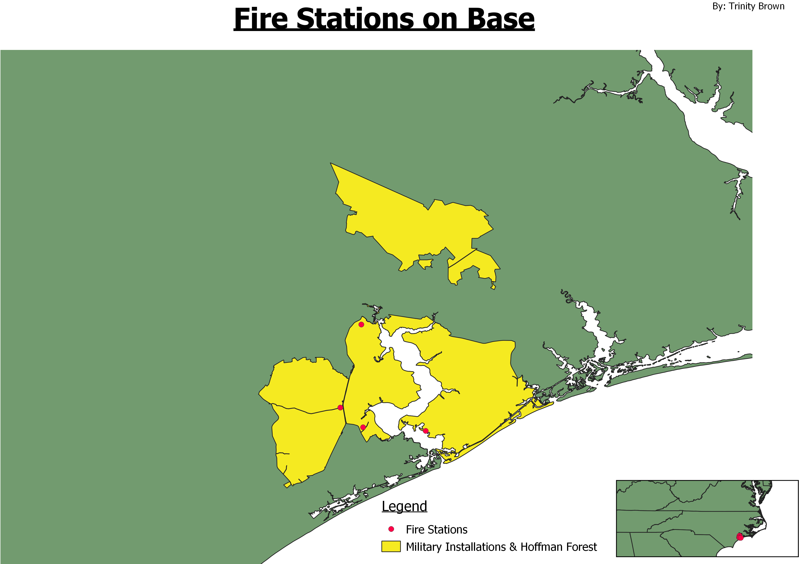

Homework 10: Make a choropleth or proportional symbol map
Trinity Brown
My map depicts the the different fire stations across Camp Lejeune, Johnson and New River. I had to intrsect the data of firestations in onslow county with the layer of land belonging to military installations. I then had to clip part of the layer showing the land belonging to the military installations because it covered water ways.
Map

Data used for this project
SHP file
SHP file
Data source